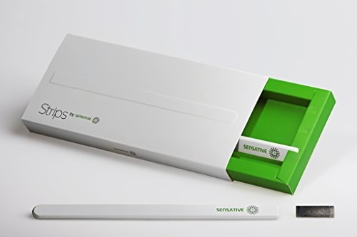
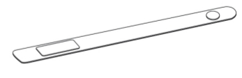
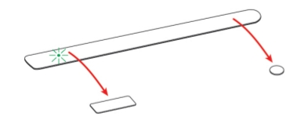

Sensative Strips Door/Window Sensor¶
Sensative Strips Z-Wave Plus Ultra Thin Door/Window Contact Sensor¶

Operation¶
Enerwave ZW500D Z-wave 500W Preset Dimmer Switch is a perfect wireless manual and remote on/off/dim/bright control replacement of regular on/off and dimmer switch, controlling incandescent, dimmable LED and CFL. This Z-Wave dimmer switch is fully compatible with other Z-wave devices, provides programmable function creating a perfect ambiance such as scenes, association, schedule event, etc
Specification¶
- Voltage: 120VAC, 60Hz
- Maximum load 500W Incandescent, Dimmable LED and CFL, suggested 10W or two light bulbs minimum
- Signal Frequency: 908.42 Mhz
- Range: Up to 100 feet in open-air and line of sight distance, depending on obstacles and blocks
- Terminations 5 Terminals for Line, Neutral, Load, Traveler and Ground
- Operation Temperature 32°F – 104°F (0°C -40 °C), Indoor Use
Inclusion/Exclusion to/from a network¶
 
- Put controller to Inclusion/Exclusion mode
- Follow process to wake device up (refer #Wake up). Device will be included/excluded to/from zwave network.
Wake up¶
- Place the round magnet at the rounded edge.
- When the LED blinks, move the magnet away.
- Repeat 3 times in total within 10 seconds.
LED indication¶
- 1 short blink User feedback during commands
Specific event detected (E.g door opened)
2 short For demo purposes (only if Strips is not added)
1 long User command successfully executed
5 short Error. E.g. communication with controller failed
Factory reset¶
You may reset Strips if the controller is lost. Follow the instructions above for Wake up. After 5 LED blinks, place the magnet at the rounded edge again for 10 seconds. A long LED signal indicates success.
Configuration description¶
- Notification type
Parameter: 1 (0x01)
Size: 1 byte
- Value:
- 0 = Binary sensor report
- 1 = Notification report
- 2 = Basic set report
Default: 1
- LED indication
Parameter: 2 (0x02)
Size: 1 byte
- Value:
- 0 = Disable LED for specific event
- 1 = Enable LED for specific event